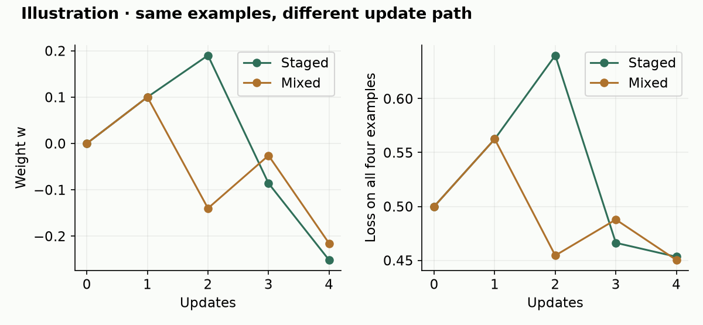
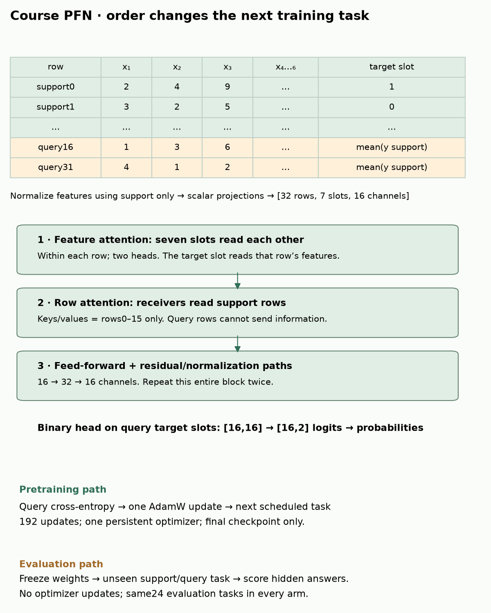
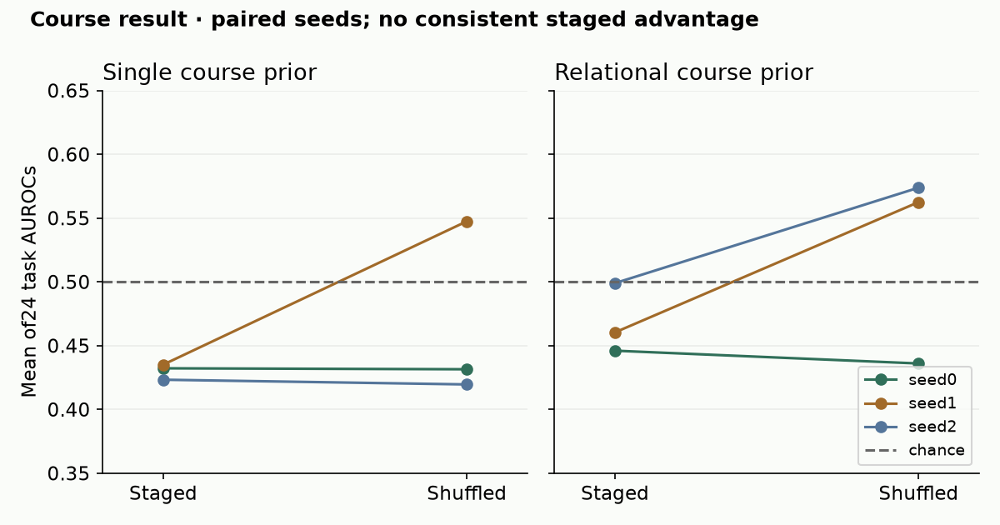
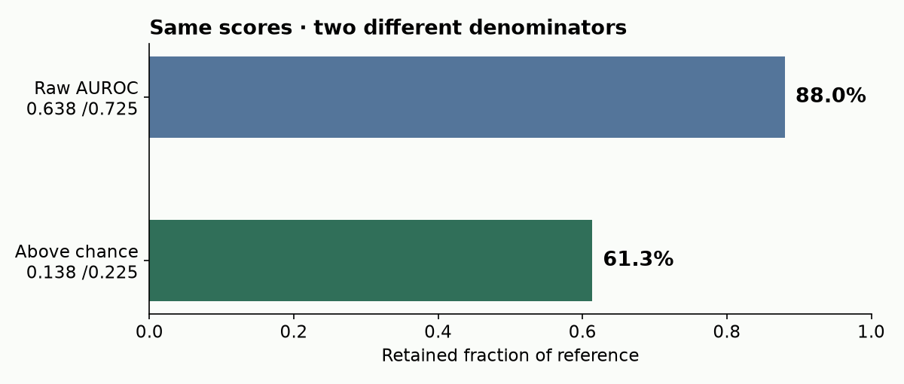

B20 · Curriculum Matters: ordering versus scale¶
Research bridge · Elective ◆ · One win: design a comparison in which only training order changes
B19 asked whether benchmark evidence supports a claim. B19b asked what a forecaster could know at a particular time. Now ask a different timing question: in what order did a model learn from its training tasks? For the relational-learning thesis, better results from a smaller synthetic corpus would be useful. First we must separate an ordering effect from a changed generator, extra optimization, or benchmark-driven selection.
Student notebook · Executed solution · Download solution · Printable reference · Frozen reproduction contract
A prior is a distribution of possible tasks. A synthetic generator samples tasks from that prior. A task contains labeled support examples and query examples whose labels the predictor must infer. Pretraining updates model weights across many such tasks. In-context learning uses support examples to predict query labels with those pretrained weights held fixed.
B06 distinguished changing a prior from changing a model. B13 separated relational data generation from the representation used at inference. A relational generator can feed an ordinary feature matrix to a transformer; graph-shaped generation does not require graph-shaped prediction.
Worked prerequisite. A customer has three transactions with values 2, 4 and 9. A backward join can produce count3, mean5 and maximum9 beside that customer's own features. Deep Feature Synthesis (DFS) repeatedly applies such joins and aggregations to construct a flat row for each target entity. This transformation can lose information: a model cannot recover transaction order from those three statistics.
2 · The same examples can produce different weights¶
A curriculum controls the order or mixture of training tasks. A stage is a segment of that schedule. “Narrow tables first” is a curriculum. “Generate different tables” changes the prior instead. “Train for more updates” changes optimization effort.
In plain terms. Each update starts from the weights left by the previous update. Swapping two tasks changes that starting point, even when the final bag of tasks is identical.
Worked example. Let one weight w predict y as w×x. Start at w=0. The loss is half the squared error: ½(wx−y)². Its slope with respect to w is x(wx−y). With learning rate0.1, subtract0.1 times that slope at each update. For x=1,y=1, the first update gives w=0.1. The next easy example gives w=0.19. A harder example x=2,y=−1 then moves it to−0.086. One more moves it to−0.2516.
The rate is the step size, not an amount of data. Use the control to swap exposure order while keeping the four examples fixed. Predict the final weight before revealing each step.
Change the order; keep all four examples
Staged: A B C D
Mixed: A C B D


The example demonstrates path dependence, not a rule that easy-first wins. At intermediate steps the two schedules have seen different subsets. Only at the end have both seen the same multiset: the same examples with the same repetition counts.
CHECK. If one stage restarts Adam's moving averages while the shuffled run keeps them, have we changed only order? No: optimizer state is another intervention.
3 · Model architecture: where does the order enter?¶
The paper uses PluRel to generate tables and databases, then the RDB-PFN consumer to learn across tasks. The diagram distinguishes that design from the compact course implementation. The paper describes six layers and width128; our inherited released-base mirror defaults to width96. That discrepancy is part of the historical source gate, not something to hide by choosing whichever trains fastest. Paper §2–3
Follow the computation
Curriculum changes the training trajectory
- 1
Generate declared synthetic tasks
A task provides support features/labels and hidden query targets.
- 2
Choose the task order
Hold the task pool and budget fixed while changing presentation order.
- 3
Train the compact course PFN
Support labels enter context; query labels enter only the training loss.
- 4
Evaluate frozen parameters
Use the declared held-out task set and compare like-for-like evidence lanes.
Open the decisive operation
If query targets are supplied as predictor inputs, are you testing a better curriculum?
No. You have changed information access and leaked answers. Task order cannot repair that contract violation.
Trace answer: No. You have changed information access and leaked answers. Task order cannot repair that contract violation.
Source-shaped compact course model; not a historical large-model curriculum reproduction.


Input. One course task has32 rows and6 feature slots. The first16 rows are support; their binary labels are available. The last16 are queries. Each feature is centered and scaled using support rows only. Scalar values become vectors of length16. A seventh slot stores the target embedding: the observed support label or the support-label mean as a query placeholder.
Feature attention. Within each row, attention mixes its seven slots. An attention weight measures how strongly one vector reads another for this computation; it is not a causal feature attribution.
Row attention. For each feature slot, every receiver may read the16 support rows. Queries are never keys or values, so one query cannot convey its unknown target or alter another query through that route. Two repeated blocks apply feature attention, row attention, normalization and a small feed-forward network. A binary head maps each query's target slot to two logits; softmax converts them to class probabilities.
Training versus prediction. The model predicts16 query labels. Cross-entropy compares those probabilities with the hidden training answers, then AdamW updates weights. The scheduler selects the next task. Evaluation freezes weights and presents new tasks. A loss function can read answers after prediction without those answers being predictor inputs.
Scope check. The notebook exposes the complete compact model and trainer. Its two blocks, width16, tiny course priors and192 updates differ from the paper. Output and gradient agreement with the inherited B13 implementation checks this mechanism, not the authors' unrecovered experiment code.
4 · Freeze the comparison before inspecting the scores¶
Our declared grid has two generators × two orders × three paired seeds = 12 fits. Each training pool contains96 tasks at active widths2,4,6. Every task has32 rows and is used twice. The staged arm shuffles within each width bucket and visits buckets narrow-to-wide. The shuffled arm mixes all192 task exposures. Both use the same padded6-column shape and the final checkpoint after192 updates.
Within each ordering pair, task bytes, initial weights, AdamW settings, exposure counts and evaluation tasks are identical. Optimizer state continues across every stage. There is no early stopping or hyperparameter search. We save every schedule and prediction. Changing generator family is a separate intervention: it changes the data, so that contrast cannot be called a pure ordering effect.
The course relational prior. It generates32 parent rows and96 child rows with valid foreign keys, then forms parent features and count/mean/max aggregates. Narrow stages retain fewer of those features; they still generate the full underlying database. This tests feature-exposure order, not progressively larger relational schemas. The single-table prior uses independent Gaussian features. Both construct per-task random linear targets with noise; the binary threshold uses support rows only.
| Quantity | Why count it? | Frozen course value |
|---|---|---|
| Unique synthetic tasks | Data diversity | 96 per pool |
| Task exposures | Reuse can hide extra training | 192 per fit |
| Optimizer updates | Count optimization steps | 192 per fit, batch1 |
| Model feature cells processed | Width/rows change work per exposure | 36,864 per fit, padding included |
| Generated raw cells | Cost before model input | Separate family conventions in contract |
| Wall-clock seconds | Measures actual execution | Recorded per fit; not inferred from database count |
The same model-cell count is a useful control here because tensor dimensions are fixed. It is not a universal measure of compute: attention, memory, preprocessing and hardware also matter. Reusing a database twice does not create another independent database.
| Prior | Order | AUROC: seed0 /1 /2 | Mean AUROC | Mean cross-entropy ↓ |
|---|---|---|---|---|
| single | staged | 0.4322 / 0.4351 / 0.4232 | 0.4302 | 0.6947 |
| single | shuffled | 0.4314 / 0.5474 / 0.4195 | 0.4661 | 0.6945 |
| relational | staged | 0.4460 / 0.4604 / 0.4989 | 0.4684 | 0.6926 |
| relational | shuffled | 0.4359 / 0.5625 / 0.5738 | 0.5241 | 0.6918 |


Evaluation uses the same24 unseen synthetic tasks for all fits:12 from each family,16 query rows per task. AUROC is the fraction of positive-negative pairs ranked correctly, with half-credit for ties. We compute it per task and average tasks equally. Binary cross-entropy also checks probability quality; a constant0.5 prediction has loss about0.6931.
The models are weak at this budget. Most AUROCs are around or below chance, and their probability losses are near that constant baseline. The paired ordering differences change by seed; these results do not establish a beneficial curriculum or relational-pretraining advantage. Seed variation measures this training procedure's variability on one fixed synthetic evaluation pool, not uncertainty over all real databases. We retain the full grid rather than select the most favorable seed.
CHECK. Make one test label change. The saved trained weights must stay fixed. The reported score should change. If training changes, evaluation has leaked into model construction.
5 · Reconstruct the named paper comparison¶
Primary reading: Curriculum Matters v1, Table1 and Tables5–6. Read §3 first to identify Family A's progressive single-table stages and Family B's mixed version of the same corpus. The reported comparison uses23 tasks and context1024. It is our declared historical target.
| Printed row | Mean of23 listed scores | Displayed average | Matches at3 decimals? |
|---|---|---|---|
| TF07 | 0.567217 | 0.567 | Yes |
| TF08 | 0.603609 | 0.604 | Yes |
| TF09 | 0.625957 | 0.626 | Yes |
| TF10 | 0.653783 | 0.654 | Yes |
| TF12 | 0.714957 | 0.715 | Yes |
| TF13 | 0.696565 | 0.697 | Yes |
| TF14 | 0.705130 | 0.705 | Yes |
| TF15 | 0.694478 | 0.694 | Yes |
| TF16 | 0.687087 | 0.687 | Yes |
| TF17 | 0.702652 | 0.703 | Yes |
| Best ours | 0.729652 | 0.715 | No |
| Family B all-at-once | 0.540783 | 0.541 | Yes |
| Paper (single-tbl) | 0.799870 | 0.800 | Yes |
| Paper (full) | 0.809913 | 0.810 | Yes |
We parsed all14 rows ×23 task scores = 322 printed scores, including every listed stage and both published baselines. The final Family A mean is0.702652 and B is0.540783; their gap is0.161870. These round to the headline0.703 and0.541. This is a complete audit of that printed matrix, not newly generated predictions.
A summary mismatch. The “Best ours” task entries average to0.729652, whereas its average column says0.715. The latter matches the best single listed checkpoint, TF12. Per-task maxima and one selected checkpoint answer different questions; a collection of best test scores is not a deployable checkpoint-selection procedure.
A prose mismatch. The paper says all-at-once degrades on every task. The printed final A/B comparison instead favors A on21 tasks and B on two: Diabetes130US and pol. Retain both exceptions. AppendixB's four-decimal exactness claims also require care because the input scores are already rounded.
Historical identity still matters. The paper's stage table omits TF11 despite the TF07–TF17 wording. Exact corpus bytes, exposures, architecture, optimizer schedule, seeds, splits, checkpoint selection and support identities remain unresolved. FamilyG has two descriptions. C-versus-E changes initialization as well as relational ordering. These ambiguities restrict causal interpretation and prevent an exact training recipe from being invented. Source packet · Audit report
Reproduction status. Printed-table audit COMPLETE. Historical training
INCOMPLETE_SOURCE_PROTOCOL_GATE; fresh paper pretraining and whole-paper reproductionNOT_RUN. The tested reproduction command authenticates sources and audits tables. Its--freshoption refuses execution with the missing requirements. It does not pretend to be a complete historical trainer.
6 · “88% of performance” needs a denominator¶
Worked example. The paper compares relational AUROC0.638 with0.725. Dividing gives88%. But chance AUROC is0.5. The achieved margin is0.138 and the reference margin is0.225. Their ratio is about61.3%, not88%. Both calculations are valid; they describe different quantities. Neither is a percentage of errors avoided.


A count of databases also needs a unit. One database can yield multiple target tasks, contain many more cells, or be replayed for more updates. A smaller generated corpus alone does not establish a proportional compute saving. Compare data generation, optimization and inference costs separately.
7 · Build, falsify, explain¶
In the notebook, implement three live functions: an exposure schedule that preserves the task multiset, a paired-contract check that rejects changed controls, and raw/above-chance AUROC retention. Each has immediate checks. The notebook shows the model, generator and trainer inline; saved-evidence replay runs without a repository checkout. Fresh course training is an explicit optional rerun of the complete12-fit grid.
Exit ticket. Write a curriculum experiment for your L201 proposal. Name the prior, fixed task pool, stage variable, matched exposure count, optimizer-state policy and checkpoint-selection rule. State which cost is matched and which is only measured. Decide whether this elective belongs in your relational research direction.
Two falsification tests: (1) randomize order while keeping identical contents and exposures; does the advantage survive across paired seeds? (2) keep ordering fixed but match the proposed compute measure; does the smaller corpus still save the claimed resource? Explain why our small unsuccessful pretraining experiment cannot refute the full paper.
Revisit the contract from memory after1,7 and30 days. Ask the agent about any unclear step or paste your experiment and defense for feedback. Author preparation does not establish your mastery: PENDING_WRITTEN_DEFENSE.
Back to B19b · Next planned elective: B21 · Reproduction handoff: B23